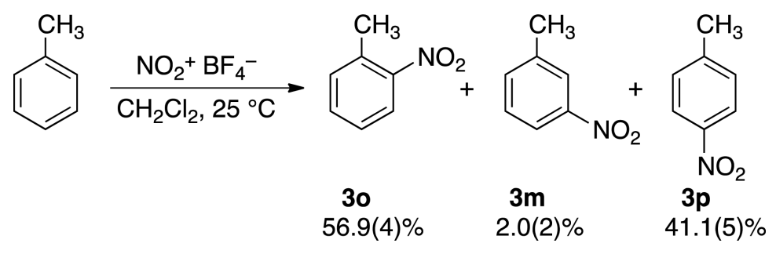
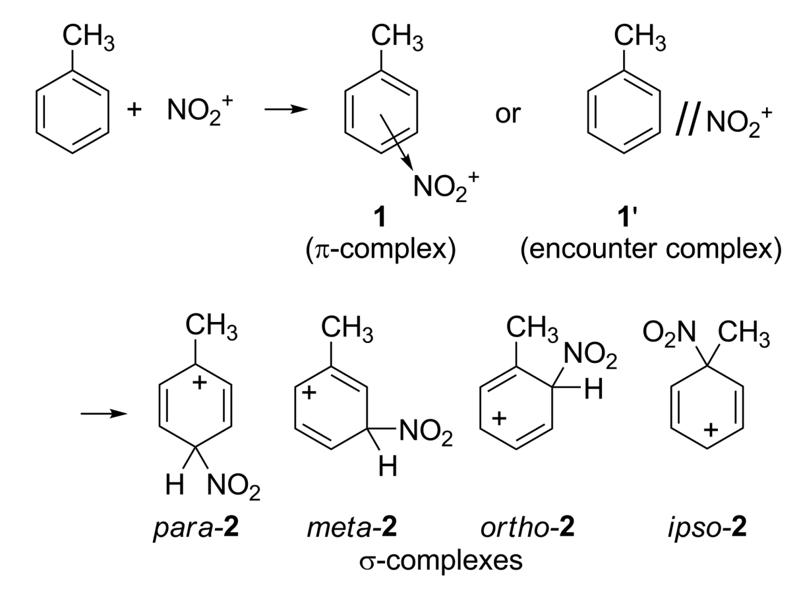
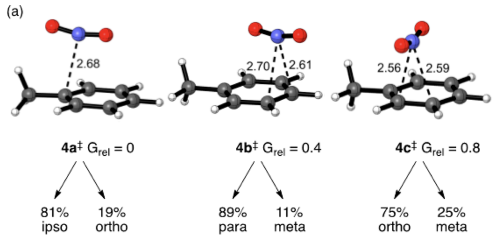

In our recently published work on screening for generality, we selected our panel of model substrates in part using cheminformatic techniques. We're not the only people to do this, obviously: cheminformatics is a busy and important field, and even in organic chemistry there's lots of papers using similar techniques these days (I liked this work from the Doyle lab). But since often the people who would benefit most from a new technique are the people who might be most intimidated by wading though documentation, I thought I'd post some simple example code here that others can copy-and-paste and modify to suit their own ends.
There are lots of ways to approach plotting chemical space, but fundamentally all approaches must address two big questions:
How do you convert molecules into some numeric representation?
Once you have numeric representations of all your molecules, how do you plot this?
I chose a relatively simple approach to the first question: molecular fingerprints (if you don't know what these are, I liked this introduction from Towards Data Science).
Based on Greg Landrum's findings, I used the RDKit7 fingerprint. RDKit is the premier cheminformatics package, and well worth a download for anyone interested in these concepts.
For the second question (dimensionality reduction), I used the UMAP algorithm. There are other approaches to this, like tSNE or PCA, but in my opinion there are relatively convincing reasons to favor UMAP (although this paper points out some limitations).
Without further ado, then, here's some example code to take a list of IUPAC-type names and generate a 2D representation:
from rdkit import Chem
from urllib.request import urlopen
import re, tqdm, sys, umap
import numpy as np
import matplotlib.pyplot as plt
# make matplotlib look good
plt.rc('font', size=11, family="serif")
plt.rc('axes', titlesize=12, labelsize=12)
plt.rc(['xtick', 'ytick'], labelsize=11)
plt.rc('legend', fontsize=12)
plt.rc('figure', titlesize=14)
%matplotlib inline
%config InlineBackend.figure_format='retina'
# function for turning names into SMILES strings, because I find writing SMILES by hand impossible
def smiles_from_name(name):
try:
url_name = re.sub(" ", "%20", name)
url = 'http://cactus.nci.nih.gov/chemical/structure/' + url_name + '/smiles'
smiles = urlopen(url, timeout=5).read().decode('utf8')
return smiles
except Exception as e:
print(name + " failed SMILES conversion")
class THbC():
""" A tetrahydrobetacarboline. """
def __init__(self, group, substituent, color="grey"):
self.name = f"2-benzyl-1-({group})-{substituent}2,3,4,9-tetrahydro-1H-pyrido[3,4-b]indole"
self.smiles = smiles_from_name(self.name)
self.mol = Chem.MolFromSmiles(self.smiles)
self.fingerprint = None
self.color = color
def get_fingerprint(self):
if self.fingerprint is None:
self.fingerprint = Chem.RDKFingerprint(self.mol, maxPath=7, branchedPaths=False)
return self.fingerprint
# I just wrote out a lot of aromatic groups...
groups = [
"phenyl", "4-methylphenyl", "4-methoxyphenyl", "4-fluorophenyl", "4-chlorophenyl", "4-bromophenyl",
"4-(trifluoromethyl)phenyl", "4-nitrophenyl", "4-cyanophenyl", "piperonyl", "dihydrobenzofuryl",
"3-methylphenyl", "3-methoxyphenyl", "3-fluorophenyl", "3-chlorophenyl", "3-bromophenyl",
"3-(trifluoromethyl)phenyl", "3-nitrophenyl", "3-cyanophenyl", "2-methylphenyl", "2-methoxyphenyl",
"2-fluorophenyl", "2-chlorophenyl", "2-bromophenyl", "2-(trifluoromethyl)phenyl",
"2-nitrophenyl", "2-cyanophenyl", "2-pyridyl", "3-pyridyl", "4-pyridyl", "2-thiophenyl", "3-thiophenyl",
"2-furyl", "3-furyl", "2-quinolinyl", "3-quinolinyl","6-quinolinyl", "5-quinolinyl", "8-quinolinyl",
"5-indolyl", "3-indolyl", "7-azaindol-3-yl", "2-pyrrolyl", "3-pyrrolyl", "2-thiazolyl", "4-thiazolyl",
"5-thiazolyl", "5-phenylisoxazol-3-yl", "imidazol-2-yl" "5-pyrimidyl", "5-indazolyl", "3-pyrazolyl",
"4-pyrazolyl", "4-imidazolyl"
]
# substituents on the indole ring, and corresponding colors
subs = ["", "6-methoxy", "6-chloro"]
colors = ["grey", "red", "green"]
# build THbC objects (this might take a minute or two)
mols = list()
for group in tqdm.tqdm(groups):
for sub, c in zip(subs, colors):
mols.append(THbC(group=group, substituent=sub, color=c))
# generate UMAP embedding
crds = umap.UMAP(n_components=2, n_neighbors=20, min_dist=0.1, metric="jaccard").fit_transform([m.get_fingerprint() for m in mols])
# plot the result
fig, ax = plt.subplots(nrows=1, ncols=1, figsize=(5,5))
plt.scatter(crds[:,0], crds[:,1], c=[m.color for m in mols], s=20, alpha=0.8)
ax.set_xticks([])
ax.set_yticks([])
plt.xlabel("UMAP1")
plt.ylabel("UMAP2")
plt.tight_layout()
plt.show()
This code generates the following image:
A 2D plot of the molecules shown above. Colors represent different substitution on the indole ring.
Although this program is a little clunky (slow calls to the CACTUS web service), it works well enough and is easy to modify as needed (to label the individual molecules, or apply a clustering algorithm to pick out model substrates). I hope you find this useful!
In the course of preparing a literature meeting on post-Hartree–Fock computational methods last year, I found myself wishing that there was a quick and simple way to illustrate the relative error of different approximations on some familiar model reactions, like a "report card" for different levels of theory. I couldn't find any such graphic online, so I decided to make one (click image to view high-res PDF):
Illustration of the accuracy of various computational methods for various model reactions
All values are in kcal/mol, and the colors encode the error of the computed value: green values are within 10% or 1 kcal/mol of the truth, while yellow values are within 50% or 5 kcal/mol and red values are outside that range. (In each case the more restrictive cutoff was used.) Where possible, values have been benchmarked to experimental data; in the remaining cases, coupled-cluster calculations were employed.
Dispersion corrections are badly needed for density-functional theory, but beyond that there isn't a clear "best" DFT method.
Hartree–Fock theory consistently predicts electron-dense species to be less stable than they are, owing to the neglect of electron correlation: so anions are too basic/nucleophilic, bonds are too weak, and the aromatic Cope transition state is far too high in energy.
Second-order Møller–Plesset perturbation theory (MP2) overcorrects the Hartree–Fock error, MP3 overcorrects the MP2 error, and MP4 overcorrects the MP3 error. The result is that HF and MP3 tend to "zig" where MP2 and MP4 tend to "zag." (The crude solution of just averaging MP2 and MP3 is surprisingly effective.)
DLPNO-CCSD(T), from Neese and co-workers, really is a magical combination of speed and accuracy!
Hopefully this overview, while simple, helps to build intuition about how good or bad computational predictions at a given level of theory are.
Who is Peter Thiel? Tyler Cowen calls him one of the most important public intellectuals of our era. Bloomberg called him responsible for the ideology of Silicon Valley “more than any other living Silicon Valley investor or entrepreneur.” Depending on who you ask, he’s either a shadowy plutocratic genius or a visionary forward-thinking genius: but everyone seems to at least agree that he’s a genius.
Zero to One is his book of business advice. Given that Thiel started two very successful businesses (PayPal and Palantir) and has been a key early investor in many others (Facebook, SpaceX, and Airbnb, to name a few), I reasoned that it had to be pretty good advice. What I didn’t anticipate is how surprising the advice would be. Given Thiel's vast influence on the tech world, I assumed that any wisdom would have filtered into mainstream awareness and become part of the established dogma. Instead, I had the opposite experience: I was surprised by much of the advice, and thought some parts were even in active conflict with other advice I’d read.
(Vox’s Timothy Lee takes the other position, accusing Thiel of repackaging “conventional wisdom as bold contrarianism” and “contrasting his own views against caricatured positions that hardly anyone actually agrees with.” I’ll present some examples below that illustrate why I think this is wrong.)
Zero to One is ostensibly a regular book organized into chapters, but reading it felt more like reading a collection of essays loosely connected by a few leitmotifs. Accordingly, I’ll summarize what I consider to be the big ideas of the book below, without any attempt to mirror the actual order that they’re presented in.
Big Ideas:
1. Competition is bad.
This seems counterintuitive: isn’t the whole point of the free market that competition is good? But Thiel argues that, from the perspective of businesses, competition is the ultimate evil. A competitive environment is one in which resources must be expended on staying ahead of other businesses, not in investing in the future. At the limit, perfect competition leads to perfect stagnation. In one of Zero to One’s many iconic quotes, Thiel quips:
If you can recognize competition as a destructive force instead of a sign of value, you're already more sane than most.
Viewing competition as bad has non-obvious implications. One implication is that you should only start a business when you have a clear path towards a competition-free market. This might be a new market, or a technological advance that obliterates the existing market. For examples of the latter, Thiel cites inter alia Google (for search) and Apple (for iPads). As a rough rule of thumb, a business needs a order-of-magnitude advantage over the competition to be free from competitive insecurity.
Thiel then goes on to criticize the push to maximize the total addressable market (TAM) of a startup. This is surprising, because every startup pitch I’ve seen tries to emphasize how big their TAM is. But if competition is bad, then the perfect place to start a company is a small, competition-free pond adjacent to a much larger ocean. 1% of a $10B market and 100% of a $100M market are the same number, but it’s much easier to grow a company in the latter.
(This whole point reminds me of Blue Ocean Strategy.)
(You might think that this principle is less true for businesses dependent on network effects, like Ebay or Facebook, but Thiel paradoxically asserts the exact opposite. Since network effects rely on almost complete saturation, these startups in particular need to start in a small, easily dominated area—like Harvard for Facebook.)
Perhaps a less obvious implication of viewing competition as bad is that thinking in terms of “disruption” is also bad. I was surprised to read this, because the Silicon Valley-adjacent people I’ve interacted with seem obsessed with disruption: everyone wants to disrupt healthcare, or education, or government. But Thiel is skeptical of this urge:
If you think of yourself as an insurgent battling dark forces, it’s easy to become unduly fixated on the obstacles in your path. But if you truly want to make something new, the act of creation is far more important than the old industries that might not like what you create.
Disruption is a way to frame innovation in negative terms, highlighting how new ideas can destroy existing systems. Thiel instead wants founders to be motivated by a desire to create new wonders. A critical reader might call this a glass-half-full/glass-half-empty rephrasing, but how we frame our own motivations often has a variety of subtle, downstream effects that are hard to appreciate in the moment.
2. Founders Need Definite Optimism.
It’s pretty obvious that founders need to be optimistic, because convicted pessimists lack the desire to create anything new: a precondition for succeeding is believing that success is possible. But Thiel further bisets optimism into definite and indefinite halves. Indefinite optimists believe that things are going to get better, but lack a clear vision of how or why. In contrast, definite optimists have a positive vision for the future.
Thiel argues that indefinite optimism epitomizes the modern world (from c. 1970 to the present). Much of our economy is devoted to indefinite optimism:
Finance epitomizes indefinite thinking because it’s the only way to make money when you have no idea how to create wealth… the fundamental tenet is that the market is random.
Thiel also criticizes philosophy for succumbing to indefinite optimism. Previously, philosophers offered substantive visions of the good life; in the late 20th century, philosophers like Robert Nozick and John Rawls, although ideological adversaries, both focused on procedural theories of philosophy that emphasized the fairness of processes, not the nature of their outcomes.
Thiel proceeds to criticize government for indefinite optimism, focusing on entitlements and procedural fairness rather than centralized planning for the future, and biotech:
Today it’s possible to wonder whether the genuine difficulty of biology has become an excuse for biotech startups’ indefinite approach to business in general. Most of the people involved expect some things to work eventually, but few want to commit to a specific company with the level of intensity necessary for success. It starts with the professors who often become part-time consultants instead of full-time employees—even for the biotech startups that begin from their own research. Then everyone else imitates the professors’ indefinite attitude. It’s easy for libertarians to claim that heavy regulation holds biotech back—and it does—but indefinite optimism may pose an even greater challenge for the future of biotech.(emphasis added)
The conclusion of all this is what you might expect: as a founder, you should have definite optimism. Just thinking the world is likely to change is not enough to make you start a good company, no matter how exciting the field: “No sector will ever be important enough that merely participating in it will be enough to build a great company.” Thiel concludes:
Darwinism may be a fine theory in other contexts, but in startups, intelligent design works best…. A startup is the largest endeavor over which you can have definite mastery. You can have agency not just over your own life, but over a small and important part of the world.
This seems like good advice. Nevertheless, I find it tough to square Thiel’s view that a company should have a clearly defined mission and purpose with the conventional wisdom that startups ought to be flexible in their early days. Paul Graham describes this in his piece on common startup mistakes:
Don't get too attached to your original plan, because it's probably wrong. Most successful startups end up doing something different than they originally intended — often so different that it doesn't even seem like the same company. You have to be prepared to see the better idea when it arrives. And the hardest part of that is often discarding your old idea.
And in another essay, he describes how common it is for startups to change their goal:
In the average Y Combinator startup, I'd guess 70% of the idea is new at the end of the first three months. Sometimes it's 100%.
Do Graham and Thiel disagree with one another on this point, or are these essays arguing about something slightly different? One attempt to synthesize these two views might be the opinion that a startup should work towards a definite goal but be somewhat path-agnostic, especially early on. I’m not sure if this synthesis would satisfy either party.
3. A company’s culture proceeds from its mission, not vice versa.
Thiel is quick to criticize the increasingly lavish corporate perks used to lure top talent, claiming that putting culture ahead of mission ultimately dooms companies:
No company has a culture; every company is a culture. A startup is a team of people on a mission, and a good culture is just what that looks like on the inside. (emphasis original)
So, how do you build a team of people on a mission? The answer, Thiel claims, is to organize your company around a shared secret: a belief that the world can be changed for the better in a specific way. This is similar to the previous point about the importance of definite optimism. All founders should believe that they’ve discovered a way to change the world that other people haven’t realized—that they’ve discovered a secret insight. A company, then, is just the natural way to actualize and communicate that insight:
The best entrepreneurs know this: every great company is built around a secret that’s hidden from the outside. A great company is a conspiracy to change the world; when you share your secret, the recipient becomes a fellow conspirator.
Thiel uses this insight to drive various points about corporate structure. For instance, every member of the conspiracy needs to be fully invested in the mission, to prevent problems arising from imperfect alignment of individual goals: “You need good people who get along, but you also need a structure to help keep everyone aligned for the long term.” This is true for management, who should be mostly paid in stock, to encourage long-termism, and for regular employees:
Everyone you involve with your company should be involved full-time… anyone who doesn’t own stock options or draw a regular salary from your company is fundamentally misaligned…. Even working remotely should be avoided.
Having a good mission is also key to recruiting, in Thiel’s mind. The uncomfortable truth about startups is that any potential hire could get a better offer, with more benefits, from an established company. Why would anyone want to work for you? The answer is that they believe in your mission—that they agree with your vision of the world and want to change it accordingly. Without a vision you’re just bidding for mercenaries.
Smaller Points Which I Found Interesting:
4. Aspects of Governance
Thiel breaks corporate governance down into three parts, which I found a useful conceptual distinction:
Ownership (equity, who controls the stock)
Possession (who makes day-to-day decisions, typically the CEO)
Control (who formally governs, e.g. a board of directors)
5. The Importance of Sales
Perhaps one of the most explicitly esoteric ideas in the book is the claim that sales is omnipresent and rules every area of life, but is cloaked by the systematic attempt every salesman makes to disguise the nature of their art. In Thiel’s words:
Whatever the career, sales ability distinguishes superstars from also-rans… Even university professors, who claim authority from scholarly achievement, are envious of the self-promoters who define their field. Academic ideas about history or English don’t just sell themselves on their intellectual merits. Even the agenda of fundamental physics and the future path of cancer research are results of persuasion. The most fundamental reason that even businesspeople underestimate the importance of sales is the systematic effort to hide it at every level of every field in a world secretly driven by it…. If you’ve invented something new but you haven’t invented an effective way to sell it, you have a bad business—no matter how good the product.
I don’t think anyone currently in academia would dispute this characterization.
6. Technological Innovation
Thiel thinks that computers are better treated as assistants than replacements for humans:
Computers are complements for humans, not substitutes. The most valuable businesses of coming decades will be built by entrepreneurs who seek to empower people rather than try to make them obsolete… We have let ourselves become enchanted by big data only because we exoticize technology.
This makes sense, but also might be a bit tautological. Any sufficiently advanced tool will invariably become a complement for some human’s workflow: AlphaFold and DALL-E have automated some human tasks, and now everyone’s expectations have adjusted and we use these tools as complements for our own capabilities. What’s the difference, a priori, between seeking to empower people and trying to make them obsolete? Does AlphaFold empower medicinal chemists or make structural biologists obsolete? (The critical reader will respond “Neither, at the moment,” which is fair.)
Additional Memorable Quotes:
“The most contrarian thing of all is not to oppose the crowd but to think for yourself.”
“All Rhodes Scholars had a great future in their past.”
“If everything worth doing has already been done, you may as well feign an allergy to achievement and become a barista.”
“Recruiting is a core competency for any company. It should never be outsourced.”
“If you don’t see any salespeople, you’re the salespeople.”
“You can’t dominate a submarket if it’s fictional.”
“The best projects are likely to be overlooked, not trumpeted by a crowd; the best problems to work on are often the ones nobody else even tries to solve.”
Conclusions:
How can such a famous book remain countercultural almost a decade after it was published? One possibility is that Thiel presents only one side of a dialectic, while other authors present the natural opposing views. Since community consensus follows the synthesis of the two views, both extremes appear to be arguing against the norm even at equilibrium. This might be true; I’m not well-versed enough in the startup literature to know.
Another possibility is that Thiel’s advice is simply difficult to understand, or difficult to follow. It’s easy to read wisdom literature (like the Book of Proverbs) but hard to apply it to your life; simply reading something wise doesn’t automatically make you wise. Maybe Zero to One is like a modern-day Proverbs for founders—multitudes read it, but only a rare breed of person is able to successfully understand and actualize its insights.
Perhaps the biggest drawback of Zero to One is apparent just from the title. Thiel is primarily interested in businesses that aim to change the world, to build something completely new and revolutionary, to go not from 1 to N but from 0 to 1. And so much of the advice in the book is only applicable to businesses trying to go from 0 to 1: how does a restaurant gain an order-of-magnitude advantage over other restaurants and avoid competition? Is the French Laundry 10x better than Alinea? Is Chipotle 10x better than Qdoba?
Thiel’s answer to this question is probably “don’t start a restaurant”; in an interview with Tyler Cowen he said that the Straussian reading of Zero to One was “don’t start a business.” And indeed every piece of positive advice in the book can be inverted to the corresponding cautionary wisdom: don’t start a business unless (i) you think you’ve found a secret about the world and (ii) you have a concrete plan for implementing it without (iii) competing with existing businesses.
But it’s good that restaurants exist, and so at the very least we can conclude that Zero to One shouldn’t be read as a categorical imperative for all businesses, but advice only for a narrower subset thereof. Not every founder needs to start a “Zero to One” business. Not every business needs to be PayPal or Facebook.
What wisdom does Zero to One have for academia? The principle of avoiding competition is an obvious one: nobody in their right mind should start a new program in photoredox catalysis right now. In contrast, some research areas seem almost totally neglected at the moment (W. Dean Harman and his work on η2–arene complexes comes to mind).
Thiel’s point about definite optimism also translates readily to the research sphere. If our goal is to advance scientific progress, definite optimism starts with a vision of the future of our field and generates a roadmap of how to get there. This vision could be a lot of things—designing arbitrary enzymes in silico, perfect prediction of absolute binding constants in relevant environments, CO2 reduction on megaton scale, fully automated synthesis of arbitrary natural products—but the correct research direction then becomes “whatever gets us closer to that goal.” In contrast, indefinite optimism is a belief that science will advance more or less through Brownian motion, by following random grants and research directions that lead to publications. Needless to say, the former is better than the latter.
(The point about misalignment of incentives is also excellent when applied to academia, but deserves a longer treatment than I can give here.)
Overall, I think Zero to One is an excellent book, and worth reading for anyone considering anything startup-related (including starting a research group).
This is the second in what will hopefully become a series of blog posts (previously) focusing on the fascinating work of Dan Singleton (professor at Texas A&M). My goal is to provide concise and accessible summaries of his work and highlight conclusions relevant to the mechanistic or computational chemist.
Today I want to discuss one of my favorite papers, a detailed study of the nitration of toluene by Singleton lab at Texas A&M.

Regiochemistry of the nitration of toluene with nitronium tetrafluoroborate in dichloromethane.
This reaction, a textbook example of electrophilic aromatic substitution, has long puzzled organic chemists. The central paradox is that intermolecular selectivity is typically quite poor between different arenes, but positional selectivity is high—implying that NO2+ is unable to recognize more electron-rich arenes but somehow still able to recognize more electron-rich sites within a given arene.
George Olah devoted considerable effort to studying this paradox:
Kuhn and I have subsequently developed a new efficient nitration method by using stable nitronium salts (like tetrafluoroborate) as nitrating agents. Nitronium salt nitrations are also too fast to measure their absolute rates, but the use of the competition method showed in our work low substrate selectivity, e.g., kt/kb of 1-2. [In other words, competition experiments show at most a 2-fold preference for toluene.]On the basis of the Brown selectivity rules, if these fast reactions followed σ-complex routes they would also have a predictably low positional selectivity (with high meta isomer content). However, the observed low substrate selectivities were all accompanied by high discrimination between available positions (typical isomer distributions of nitrotoluenes were (%) ortho:meta:para = 66:3:31). Consequently, a meta position would seem to be sevenfold deactivated compared to a benzene position, giving a partial rate factor of mf = 0.14. These observations are inconsistent with any mechanism in which the individual nuclear positions compete for the reagent (in the σ-complex step).
In explanation, we suggested the formation of a π complex in the first step of the reactions followed by conversion into σ complexes (which are of course separate for the individual ortho, para, and meta positions), allowing discrimination in orientation of products.
(ref, emphasis added)
His conclusion, summarized in the last sentence of the above quote, was that two different sets of complexes were involved: π complexes which controlled arene–arene selectivity, and σ complexes which controlled positional selectivity. Thus, the paradox could be resolved simply by invoking different ∆∆G‡ values for the transition states leading to π- and σ-complex formation. The somewhat epicyclic nature of this proposal led to pushback from the community, and (as Singleton summarizes) no cogent explanation for this reactivity had yet been advanced at the time of writing.

A summary of Olah’s proposed resolution, featuring π- and σ-complexes.
The authors of this paper initiated their studies of this reaction by performing an extensive series of “traditional” DFT calculations in implicit solvent. M06-2X/6-311G(d) was chosen by benchmarking against coupled-cluster calculations, and the regiochemistry was examined with a variety of computational methods.
In the absence of BF4-, naïve calculations predict entirely the wrong result: the para product is predicted to be more favorable than the ortho product, and no meta product is predicted to form at all. However, closer examination of the transition states reveals post-transition-state bifurcation in each case: for instance, the “para” transition state actually leads to para/meta in a 89:11 ratio. When all possible bifurcations for all transition states are taken into account in a Boltzmann-weighted way, the results remain wrong: para is still incorrectly favored over ortho, and meta is now predicted to form in a much higher proportion than observed.

Illustration of transition states and post-TS bifurcations for traditional DFT calculations.
The authors examine various potential resolutions of this problem, including inclusion of BF4-, use of explicit solvent within an ONIOM scheme, and other nitration systems which might lead to more dissociated counterions. These methods lead to different, but equally wrong, conclusions.
They then perform free energy calculations to determine the energetics of nitronium approach to toluene (in dichloromethane). Surprisingly, no barrier exists to NO2+ attack: once nitronium comes within 4.5 Å of the arene, it is “destined to form some isomer” of product (in the authors’ words). Singleton and Nieves-Quinones dryly note:
…The apparent absence of transition states (more on this later) after formation of the encounter complex has never previously been suggested. This absence is in fact counter to basic ideas in all previous explanations of the selectivity.
This observation explains one horn of the dilemma—why selectivity between different arenes is low—but leaves unanswered why positional selectivity is so high. To examine this question, the authors then directly run reactions in silico by using unconstrained ab initio molecular dynamics (AIMD) and observe the product ratio. The product ratio (45:2:53 o/m/p) they observe matches the experimental values (41:2:57 o/m/p) almost perfectly!
With this support for the validity of the computational model in hand, the authors then examine the productive trajectories in great detail. Surprisingly, they find that although no barrier exists to nitronium attack, the reaction is relatively slow to proceed, taking on average of 3.1 ps to form the product. Trajectories lacking either explicit solvent or tetrafluoroborate lack both this recalcitrance and the observed selectivity: instead, nitronium opportunistically reacts with the first carbon it approaches. This suggests that selectivity is only possible when the nitronium–toluene complex is sufficiently persistent.
Nitronium roams within the π complex, sampling different carbons before ultimately forming product.
The authors attribute the long life of the NO2+—toluene complex to the fact that the explicit solvent cage must reorganize to stabilize formation of the Wheland intermediate. This requires both reorientation of the dichloromethane molecules and repositioning of the tetrafluoroborate anion, which both occur on the timescale of the trajectories (ref). Accordingly, the reaction is put on hold while cage reorganization occurs, giving NO2+ time to preferentially attack the ortho and para carbons. (I would be tempted to call the π complex a dynamic/entropic intermediate, in the language of either Singleton or Houk.)
This computational picture thus accurately reproduces the experimental observations and explains the initial paradox we posed: selectivity does not arise through competing transition state energies, but through partitioning of a product-committed π complex which is prevented from reacting further by non-instantaneous solvent relaxation. Since similar π complexes can be formed under almost any nitration conditions, this proposal explains the often similar selectivities observed with other reagents or solvents.
More philosophically, this proposal explains experimental results without invoking any transition states whatsoever. In their introduction, the authors quote Gould as stating:
If the configuration and energy of each of the intermediates and transition states through which a reacting system passes are known, it is not too much to say that the mechanism of the reaction is understood.
While this may be true to a first approximation in most cases, Singleton and co-workers have demonstrated here that this is not true in every case. This is an important conceptual point. As our ability to study low-barrier processes and reactive intermediates grows, I expect that we will more clearly appreciate the limitations of transition-state theory, and have to develop new techniques to interpret experimental observations.
But perhaps the reason I find this paper most exciting is simply the beautiful match between theory and experiment for such a complex and seemingly intractable system. This work not only predicts the observed reaction outcomes under realistic conditions, but also allows (through AIMD) the complete analysis of the entire reaction landscape in exquisite detail, from approach to post-bond-forming steps. In other words, this is a mechanistic chemist’s dream: a perfect movie of the entire reaction’s progress, from beginning to end. Go and do likewise!
Thanks to Daniel Broere and Joe Gair for noticing that "electrophilic aromatic substitution" was erroneously written as "nucleophilic aromatic substitution." This embarassing oversight has been corrected.
Over the past few weeks, I’ve been transfixed, and saddened, by Eric Gilliam’s three-part series about the history of MIT (my alma mater). I’ll post a few quotations and responses below, but if you’re interested you should just go read the original essays
(1,
2,
3).
Why MIT Was Created
Professors who are not steeped in hands-on industrial practice could not produce the kinds of workers that were immediately useful to industry. These schools were outputting the kind of men that [Thomas] Edison, and many others mentioned above, did not believe were meeting the needs of industry. And the technical know-how taught in trade schools was great, but an ideal institute of technology should also impart some higher engineering and scientific knowledge to students to enable them to be more innovative, intelligent problem-solvers.
So, MIT was founded to solve this problem. This school was not designed to be a place for purely lecturing and rote learning. A smattering of intelligent men from industry and university men with an applied bent to them made up the original faculty. Content was lectured as needed, but what differentiated MIT was its innovative use of the laboratory method. Instructors taught “through actual handling of the apparatus and by working on problems, shoulder to shoulder with the boys.” And the schedule, from 9-5 (with a lunch break) 5 days a week and additional class on Saturday was meant to simulate a normal work schedule and, thus, ease the eventual transition to life in the working world.
(part 1)
This quote highlights how MIT was intended to be a counter-cultural university, founded on a distinctly different model than other institutions (like Harvard).
MIT was not meant to be a center of learning and theoretical research, but a school focusing on training the next generation of industrial leaders.
How MIT Supported Itself
But [MIT President] Maclaurin had an idea: self-support. MIT would capitalize on its own assets and earn money by formally offering its services to industry on a larger scale. High numbers of industrial partners had been eager to engage in ad-hoc courses of research with MIT’s applied professors, often paid for by the company, anyway. Why not turn this into a much larger, more formal program that was facilitated by the Institute? The idea would grow into what was known as the Technology Plan.
(part 2)
MIT operated on a different funding model than other universities, relying on support from industry.
This is, in essence, what I proposed several weeks ago in my reflection on the similarities between graduate school and consulting.
This was seen as important and honorable by its leaders at the time:
“There could be no more legitimate way for a great scientific school to seek support than by being paid for the service it can render in supplying special knowledge where it is needed... Manufacturers may come to us with problems of every kind, be they scientific, simple, technical or foolish. We shall handle each seriously, giving the best the institute has at its disposal” - William Walker, head of the Division for Industrial Cooperation and Research
(part 2)
Why MIT Changed Paths
The answer to this question is the subject of Gilliam's
third post.
It's a bit too complex to fully summarize here, but there were a few key factors:
The massive increase in post-WWII funding for science allowed MIT to shift away from applied research and towards basic research.
The growing importance of industrial research labs at inter alia Bell Labs, GE, and DuPont meant that the need for academic applied research was decreasing, and also that academically trained researchers were valuable assets to industry. (This was the case only in the post-war period, however, and by 1980 the era of large industrial research labs had mostly concluded.)
A growing distaste for pursing "boundary work" that could also be done in industry, as opposed to pursuing a uniquely academic niche.
Crucially, the first two factors are less true today than they were when MIT made this decision, implying that the niche filled by "Old MIT" could be occupied again today.
Why A School Like Old MIT Should Still Exist
It seems clear, given MIT’s transition to a more university style of education, that we are left with a hole. We do not have an elite hybrid technical school/applied research institute like this that can draw top talent away from places like Harvard and Stanford to its more hands-on style of education. But, as a country where the manufacturing sector is shrinking (and median wages aren’t doing so well either), we may need a new MIT now more than ever.
There are plenty of individuals at top schools who COULD be swayed to attend a place like this. Speaking for Stanford, where I went to undergrad, there was a large population of people who majored in mechanical engineering and were disenchanted because they did almost exclusively problem set work and very little building of anything real. And I knew even more people majoring in other subjects who abandoned mechanical engineering and majors like it for this reason! “We’re training you to be mechanical engineering managers, not traditional mechanical engineers,” was a common line used in the department. And, while that is a fine goal for a program, it is not what many of the students seem to want. What if I just want to be a top-flight regular engineer who can build awesome stuff?
(part 1)
There can and should be individuals who spend almost all of their time on pure research. But it is probably bad for future progress to allow too many of these individuals to work in an environment in which few of their peers are spending a substantial amount of time working on industrial applications and problems. No matter what, some basic research will always find a way of trickling its way down into practical industrial importance. But allowing pure researchers to be siloed from the acquaintance of those who work on industrial applications — and not just the need to work on those problems themselves — feels like it is setting the system up for inefficiency. When we look back on the era of explosive productivity in areas of basic research like physics and math in the early 1900s, even the purest of pure researchers at the time tended to have regular interactions either with industry or with researchers who did industry-related research — due to industry contracts themselves, close friends who did industry work regularly, or conscription to work on military.
(part 2)
Gilliam's conclusions seem broadly correct to me. While MIT is still a great school, it's no longer pursuing a distinct model for education. The main factors distinguishing MIT from peer institutions are cultural, and even those are being activelysuppressed by the current administration.
In total it took less than a century for the entrepreneurial mindset of MIT, a "startup university", to be replaced by the exact institutional conservatism it was founded to oppose. "You either die a hero or live long enough to see yourself become the villain."
More broadly, there's a broad sense today that innovation, especially in the physical world, is slowing (Peter Thiel may be the most notable proponent of this claim).
A century ago, Americans could build whole networks of subways with comparatively primitive technology; now, something as simple as building a single subway station has become a Herculean task.
I don't mean to draw too direct of a causal connection between the end of Old MIT and the decline in real-world innovation, but perhaps a new school focused on unglamorous, nuts-and-bolts innovation rather than holistic education is exactly what the US needs now.


{kind=link}